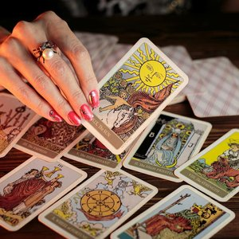
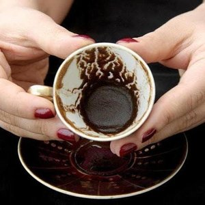

Ayune: Meus Olhos para o Seu Destino
Leituras Místicas de Tarô e Borra de Café. Uma jornada de autoconhecimento guiada pela sabedoria ancestral árabe.
A Tradição de Ayune
"Ayune", que significa "meus olhos" em árabe, reflete a minha missão: lançar um olhar profundo sobre as questões da sua vida.
Raízes Ancestrais
Descendente de uma família árabe tradicional, aprendi as danças árabes e o oráculo da leitura ainda menina. Estes saberes não foram apenas estudados, mas vividos e transmitidos de geração em geração, correndo em minhas veias.
Hoje, dedico-me a perpetuar essas tradições milenares que me foram confiadas por meus ancestrais. Faço isso através da profunda arte da leitura da borra de café, do Tarô e da expressão corporal da dança oriental árabe.
Minha leitura é um encontro com a sua própria essência, guiada pela sabedoria do oriente.
Oráculos e Leituras

Leitura de Tarô
Aconselhamento e direcionamento através dos arcanos. Ideal para clareza em decisões, questões afetivas, profissionais e espirituais. Realizado com seriedade e respeito ao seu momento.

Cafeomancia
(Leitura de Borra de Café)
A milenar tradição árabe de interpretar os símbolos formados pela borra do café. Uma experiência íntima e reveladora, que conecta o momento presente com as tendências do futuro.
Agende Sua Consulta
Entre em contato para verificar horários disponíveis para sessões online de Tarô ou sessões presenciais de Cafeomancia e Tarô.
WhatsApp Direto
41 99900-4131
Atendimento com horário marcado